Twenty-five years understanding and communicating technology, the last fifteen making complex change land inside enterprises. I find the real problem under the stated one, connect the right people to design the fix, and activate the adoption that makes a new way of working the default rather than the exception.
AI is pushing more change through enterprises than any disruption I have worked in, and it will succeed or fail on what every disruption does: whether people find real value in adopting new tools and ways of working. That is the discipline this page is about, and the one an AI rollout actually requires.
To succeed, an effort needs three things in place:
As the saying goes, culture eats strategy for breakfast. Closing the gap between strategy and impact is where I have spent the majority of my career.
Across most of this work I sat in two seats that overlapped heavily. As account and program lead I uncovered and shaped the client's challenge, co-created the proposals that secured funding, and set the program strategy and scope. As executive relationship owner I was accountable for delivery meeting expectations. And on many engagements I was also an active member of the delivery team, in the room doing the work and landing the outcome.
At my core I am a creator and a connector: finding opportunities for new value, then bringing the right elements together to make them real. I work through participatory facilitation, not the kind that steers a group toward a predetermined answer, but the design and stewardship of an effort that needs many parties and elements to interact and co-create to reach the best result. Visual frameworks give teams something to build on together: what better looks like, where the current state actually is, and how they get from one to the other. People support what they help build. I prefer to lead from the side, and I am ready to step to the front and steer more firmly when the path is not yet clear to the team.
I am fluent across the process-improvement methods, Lean and value-stream mapping among them, without allegiance to any single one, so the method fits the organization rather than the reverse. My strongest ground is precisely where those methods tend to leave off: the human side, the hand-offs, the resistance, and the sustainment.
The last two years I spent hands-on building AI-native operating systems. That was deliberate. It grounds decades of strategy and implementation in what these tools actually do, so I can help an organization decide what is worth implementing and why, before it starts flinging AI at problems out of FOMO rather than an honest read of what will make the work and the results better.
Engagements across semiconductor manufacturing, retail, internet governance, higher education, footwear and apparel, and my own AI practice. Figures are drawn from my full career record; program reach is stated as measured, and models are labeled as models.
Leading semiconductor manufacturer
A decades-old, three-to-five-year launch lifecycle mapped end to end for the first time, current and future state across every marketing function, with ownership gaps closed and new behaviors embedded through an interactive decision toolkit.
Leading semiconductor manufacturer · internal marketing, post-reorg
After a new CMO reorganized marketing, a rebuilt campaign-execution process with RAPID decision rights the new organization could actually use, delivered as a digital toolkit of roles, responsibilities, and decision points.
Lowe's · customer experience transformation
A customer-facing behavior change across 1,710 stores, reaching 161,000 employees and 14 million customers, carried by a network of change agents equipped and authorized to lead it, with the education program, toolkit, and phased communications roadmap behind them.
ICANN · internet naming & numbering governance
Earning trust across a factional, change-fatigued global community by showing unfinished work and inviting them to shape it, then translating adopted bylaw text into visualized process maps through an iterative socialization process that built genuine alignment.
AI in daily practice · field enablement & go-to-market
A single senior operator directing an agentic team across research, enrichment, content, and outreach, work that would otherwise have required a team of specialists. This is the hands-on grounding under everything else on this page: I build with these tools to know what they actually do.
Fortune 500 footwear & apparel brand · product-development transformation
Eight interdependent, mission-critical product builds kept moving through one visible weekly operating rhythm, with executive-facing status reporting and an integrated roadmap prioritized against both strategy and operating budget.
Large for-profit university system · enterprise IT migration
Drove adoption of a new enterprise IT platform across 80 campuses in 17 states, affecting more than 70,000 students, with a train-the-trainer ambassador program and a behavior-and-performance standard by role that held after go-live because the champion network stayed in place.
XPLANE · strategy-activation IP
The strategy-activation frameworks and diagnostics I helped create and still put to work, the Adoption Curve, the Change Lever, and the DNA of Change among them, developed on the leadership team that repositioned the firm around strategy activation and organizational performance.
ICANN · meetings strategy working group
A 21-person multistakeholder group, a year in and unable to converge on how the in-person meetings program should evolve. I designed and facilitated the sessions that moved them from scattered positions to a single framework, carried it through community review across successive global meetings, and delivered the final recommendation the Board adopted.
Sephora · five cross-functional initiatives
Across five strategic initiatives spanning multiple functions, I designed and facilitated the workshops that clarified the real problem behind each, assessed organizational readiness and change risk, and delivered the recommendation reports that set the client's priorities. The work secured organizational prioritization and converted into follow-on workstreams the firm won.
How I build and run a relationship-led go-to-market motion, with AI and data carrying the research and timing load so the relationship stays human-centered and person-to-person.
GTM & business development →If you are standing up an AI program and the concern is whether the organization will adopt it and whether anyone can prove it moved the business, that is the conversation I want to have. I would love to hear where the work is getting stuck today.
patrick.a.dodson@gmail.com →ICANN · meetings strategy working group
ICANN's multistakeholder working group had spent roughly a year trying to agree how the in-person meetings program should evolve, and had stalled. The questions were real, the stakeholders many, and the group could not converge on a way forward.
I designed and facilitated the working sessions that moved a 21-person group from scattered positions to a single framework, then carried that framework through community review across successive global meetings so it held up in public before it ever reached the Board.
The Board adopted the final recommendation, including a regional-rotation schedule and an evolved public-forum structure for the meetings program.
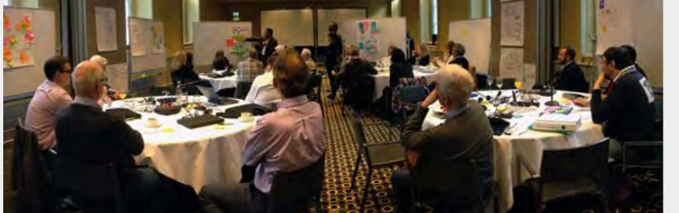
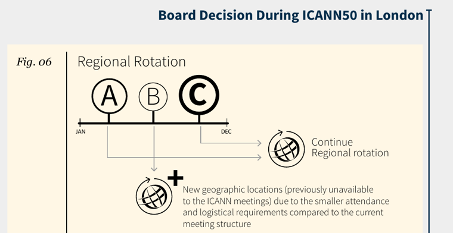
Sephora · five cross-functional initiatives
Rapid growth had outpaced the organization's processes, and leadership needed to decide which initiatives would most improve how its people work, and in what order.
Across five cross-functional initiatives, I designed and facilitated the assessment and the workshops that clarified the real problem behind each, read organizational readiness and change risk, and produced the recommendation reports leadership set its priorities from.
The work secured organizational prioritization and converted into follow-on workstreams the firm won.
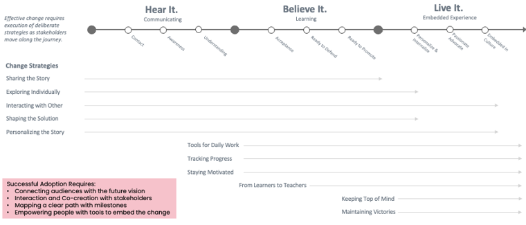
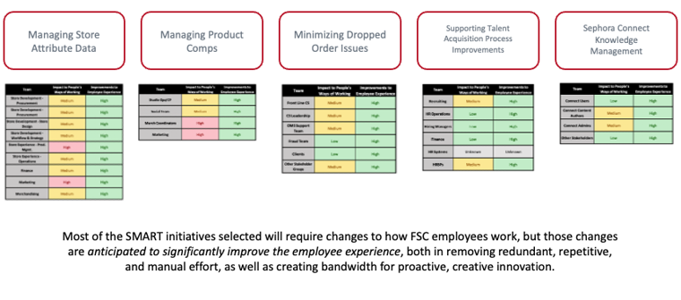
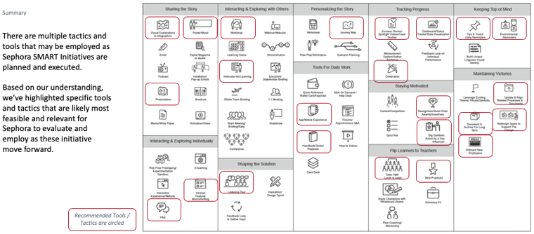
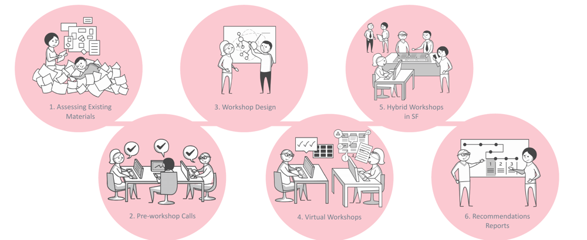
Leading Semiconductor Manufacturer · marketing lifecycle for flagship product launches
Role · account and program lead, and delivery team member
The company's marketing for flagship product launches ran on a lifecycle that cascaded three to five years across more than a dozen functions. When one function raised a flag, no one, including the CMO, could tell whether it was recoverable inside the launch window or a real threat to being ready when the product shipped. Ownership was unclear from function to function, no one owned the whole process end-to-end, (and we found a six-month stretch with no one minding the process at all).
A decades-old methodology executed through habit and tribal knowledge, carried in people's heads across a massive staff ecosystem, with hand-offs, gives and gets, and dependencies that had never been made explicit.
Mapped the entire lifecycle end to end for the first time, stage by stage, through every marketing function, with the people who run it. Clarified groups, milestones, roles, and interdependencies at every stage, and defined the paths connecting each marketer with those before and after them. Built a department alignment kit with online and offline resource planning and training, plus a visual vocabulary, activation tools, templates, and playbooks to embed the new behaviors.
An online knowledge-sharing portal grounded the change so teams found the process at the moment they needed it, not in a binder they would never open.
Delivered visibility into entire process across a massive staff ecosystem for the first time, shifting a decades-old methodology. Broke down silos from product inception through campaigns and launch, and improved the ability to spot bottlenecks, balance workload, and escalate material issues to executive leadership.
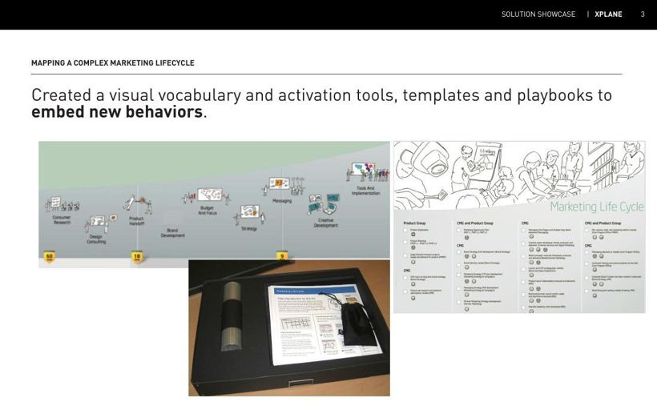
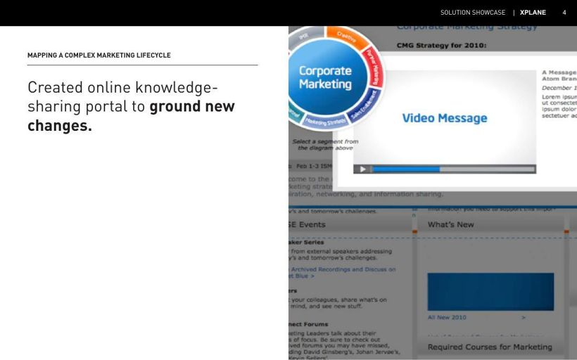
Leading Semiconductor Manufacturer · internal marketing function, following a reorganization under a new CMO
Role · account and program lead, and delivery team member
A new CMO reorganized the marketing function, and campaign execution needed a consistent process and clear decision-making to match the new structure. Without it, the reorganization would leave people unsure who decided what, and the launch machine would stall on ambiguity.
The redesign had to span all marketing functions and supporting departments at once, and land a new decision model people would actually use in daily work, not just a diagram on a wall.
Mapped current and future state across all marketing functions and supporting departments, and applied a RAPID decision model so every step of the new process carried a clear recommend, agree, perform, input, and decide. Built an interactive digital toolkit depicting roles, responsibilities, efforts, and decision points across the new operating process, so the reorganized team could see exactly how work and decisions now flowed.
The interactive toolkit gave the reorganized function a shared, navigable reference for the new way of working, tied to the new structure rather than the habits of the old one.
A consistent campaign-execution process aligned to the reorganized marketing organization, with decision rights made explicit at every stage and a living reference the team could navigate.
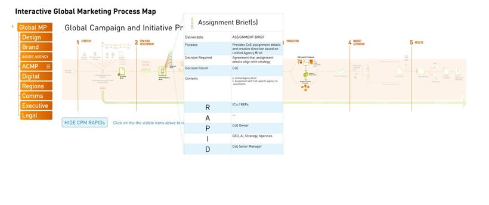
Lowe's · customer experience transformation
Role · account and program lead, and delivery team member
Lowe's set out to deliver a new customer experience across its stores, which meant moving frontline employees from an order-taker mindset to a creator mindset. The scale was the challenge: 1,710 stores, 161,000 employees, and 14 million customers.
A behavior change reaching every store and every employee segment, with no lever except influence, where success depended on frontline associates actually adopting a new way of working with customers.
Established the organizational foundation for change. Audited current state to inform a current-to-future-state strategy, behavioral standards, and guidelines; built an employee engagement framework and a phased communications roadmap reaching every store; created an education program and an engagement toolkit of alignment maps, learning tools, in-store signage, playbooks, and executive presentations; produced a two-minute Creator Mindset animation and leadership learning maps; mapped the ideal customer experience at home, on the go, in-store, and in the contact center; and reinforced the behaviors with table tents in break rooms and cafeterias.
Created a network of change agents, equipped and authorized to drive the new customer-facing behaviors, who became the leaders driving the initiative across every store.
The organizational foundation for change established across 1,710 stores and 161,000 employees, with a change-agent network carrying the new behaviors into daily store operations.
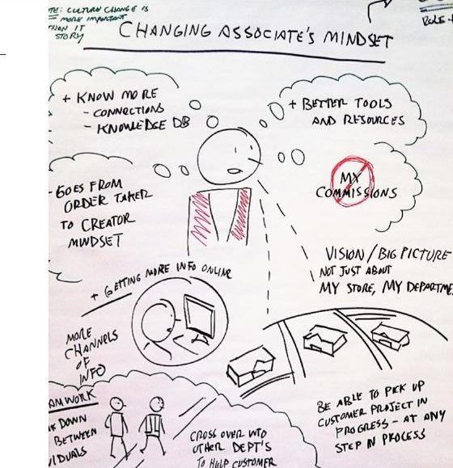
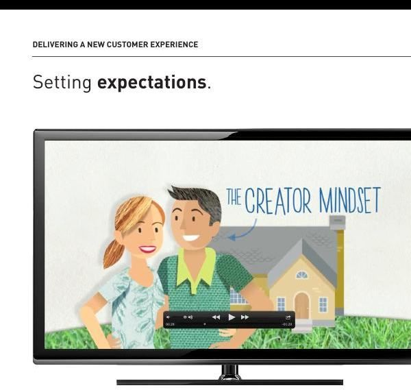
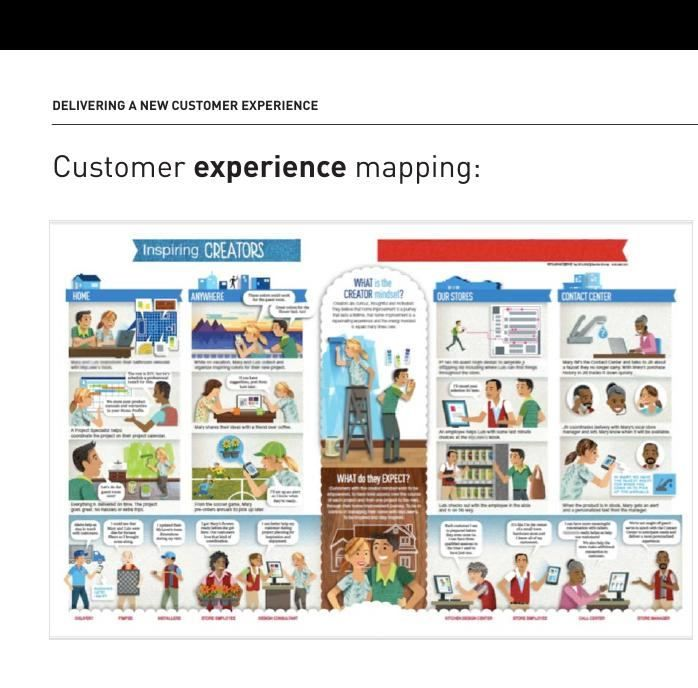
ICANN · the body coordinating and managing the internet's naming and numbering system
Role · account and program lead, and active member of the delivery team
ICANN needed to move its global multistakeholder community and its own organization through significant change in a very short timeframe. The community was factional and openly suspicious of incoming leadership. The roughly 400-person staff carried low morale and change fatigue from earlier efforts that never landed.
No single party had authority over the outcome. Trust had to be earned across groups with competing interests, and a new CEO's credibility was on the line before he had a track record to stand on.
Where the usual move was to produce a finished visual in weeks that could be used for communicating a strategy, we worked with the incoming CEO to take a wholly different approach: creating partially-developed concepts and ideas and generating deliberately unfinished, blueprint-level drafts that signaled his understanding was still forming and invited the community to shape it rather than judge it. I helped design and run that participatory process, including multiple input and collaboration sessions with ICANN staff and Community Leaders, and even a single community input session with more than 800 attendees at a global ICANN meeting. The results of those efforts drove production of finished visual infographic maps from the community's own inputs. In parallel I designed and help lead a culture assessment for the core organization: one-on-one interviews with executives and board members, a working session with staff, and a Culture and Change report and strategic narrative that paired current and future-state maps with a specific change case, including surfaced obstacles, and recommendation approaches to address them.
Showing unfinished work turned stakeholders into participants and changed judgment into contribution. The process itself became the vehicle for building trust that carried into later change efforts. This is why we refer to the deliverables as artifacts: they are what is left behind that represents a change in how a team engages and solves sticky or complex challenges.
A shared framework of understanding across factions, and a repeatable participatory model the organization reused as it worked through its most consequential transitions.
"We count on this partnership to help us navigate along the path of change."
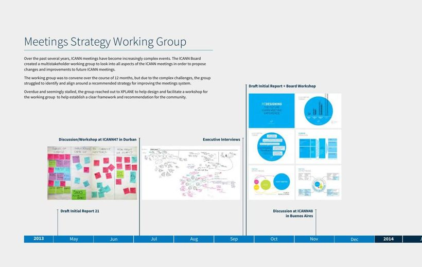
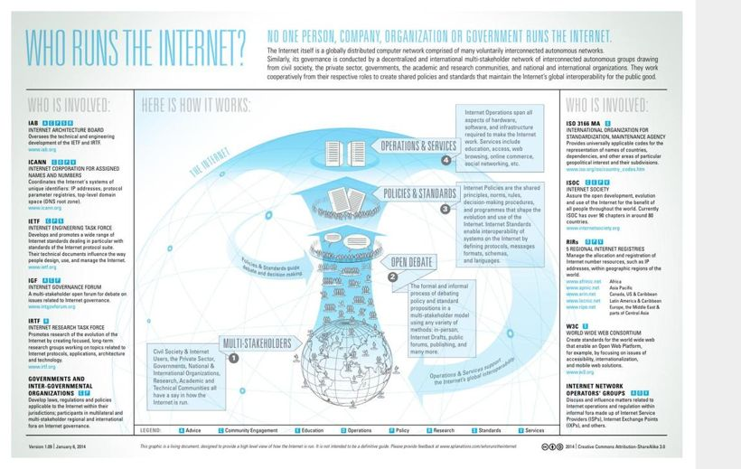
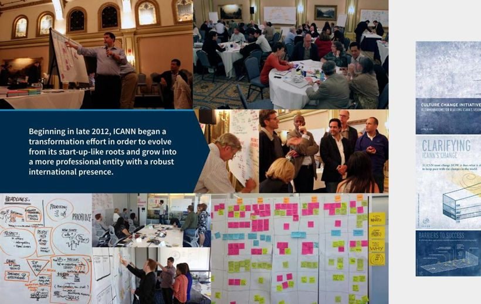
AI in daily practice · field enablement and go-to-market
Role · principal, built and operated end to end
A market and channel development team ran an under-resourced field force that had to identify ideal-profile independent agencies for a professional employer offering, with limited tooling for the research.
The sourcing and qualification work was manual, slow, and hard to reproduce consistently across a field team, which put the burden on individual judgment rather than a repeatable rule.
Built an operating engine, not a headcount. Claude and Clay for sourcing and enrichment, MCP integrations to bring local data files and web tools into the workflow, and generated outputs the field team could act on. From an 831-row licensing seed I narrowed to 398 verified independent agencies by territory and name-pattern rules, then scored to a 57-agency priority tier, and codified it as a portable playbook for other metros.
The row counts above are actuals. On effort, I built a bottom-up model, labeled as a model, that set a 4.5-hour-per-contact manual baseline and put a 600-contact run at roughly 2,700 hours of displaced manual effort against about four hours of engineering and human oversight.
Same pattern for my own go-to-market work, with a quality-assurance step for sequences before outreach, and Claude, Figma, and GitHub to build proposal and pipeline engagements. Work that would have required a team of four, a marketing manager, an information and graphic designer, a UI and UX developer, and a content writer, I directed as a single senior operator running a comparable team of agentic members.
The staffing savings were real but beside the point for a bootstrapped operator. The breakthrough was cadence. What once took weeks now takes days; what took days now takes hours. Two purposeful years in the tools taught me what these systems actually do, so I can tell an organization what is worth implementing, and why, before it starts "flinging AI" at problems out of FOMO.
Fortune 500 footwear and apparel brand · product-development transformation
Role · program lead, portfolio governance
The brand was building a suite of eight distinct but interrelated, mission-critical product-development tools to replace legacy systems, each sponsored inside a complex organization with competing priorities.
Concurrent workstreams with different owners and dependencies. Left implicit, collisions and trade-offs surface late, and decisions get made reactively, late, and often absent of strategic context.
I designed and facilitated a day-long strategy and planning session for the entire 35-plus-member team across all eight products, surfacing opportunities and tension points for the team to address together and align on the strategy. From there I made the work visible: an interactive dashboard shown on a large screen in the weekly team stand-up, with a multi-step escalation framework and, for each step, the associated content and the actions for remedy or resolution. Every workstream, its timing, dependencies, and benefits, was on the wall for everyone to see and reference.
When collisions surfaced, leaders made informed trade-offs together, aligned to the primary strategy, and everyone understood the reasoning behind a decision. The discipline was to keep the conversation about getting the answer right, not about individual or functional agendas, which only holds when everyone is bought into the strategy first.
A running operating rhythm that surfaced trade-offs early and resolved them in the open, across eight interdependent builds.
Large for-profit university system · enterprise IT migration
Role · account and program lead
A migration to a new enterprise IT platform across 80 campuses in 17 states, affecting more than 70,000 students. Success depended on staff actually adopting new roles, workflows, and behaviors, not just the system going live.
The technical implementers owned the detailed, largely impenetrable training content for every process. Left there, adoption would stall on material no one could use day to day.
Ran a gap analysis between current state and the target vision to surface barriers, clarified the value proposition to secure buy-in, and focused on the 100 most common use cases, turning dense content into accessible visual desk references for each of the six student-facing departments on every campus. Built a train-the-trainer ambassador network to create advocates, set behavior and performance standards by employee segment across more than 100 new processes, and stood up a dashboard to monitor and optimize the rollout.
The ambassador and champion network stayed in place after launch to drive adoption and keep people supported and accountable, so the new way of working held rather than the effort ending at go-live.
Staff adoption across nearly 100 processes and a successful 18-month program with very high satisfaction.
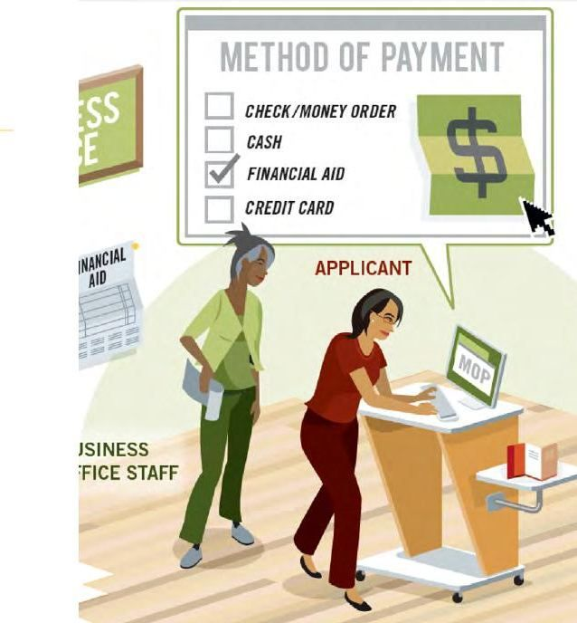
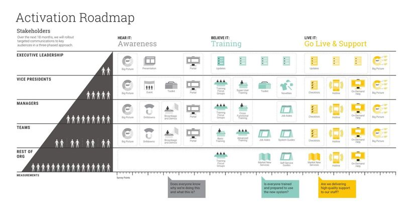
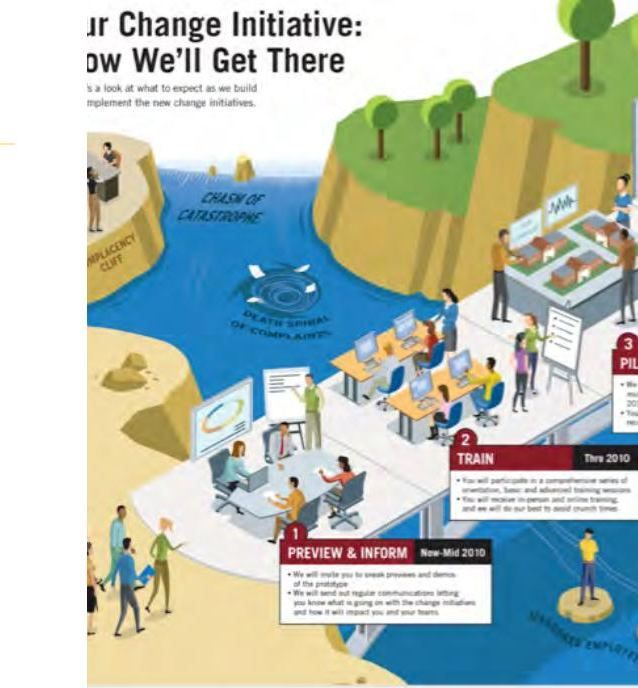
Frameworks and diagnostics I helped create at XPLANE and regularly put to work
Role · co-author and practitioner
A method is only as good as its adoption, so I lean on a core set of frameworks and tools that make change legible to the people living through it. I helped build these during my time at XPLANE, and I still reach for them.
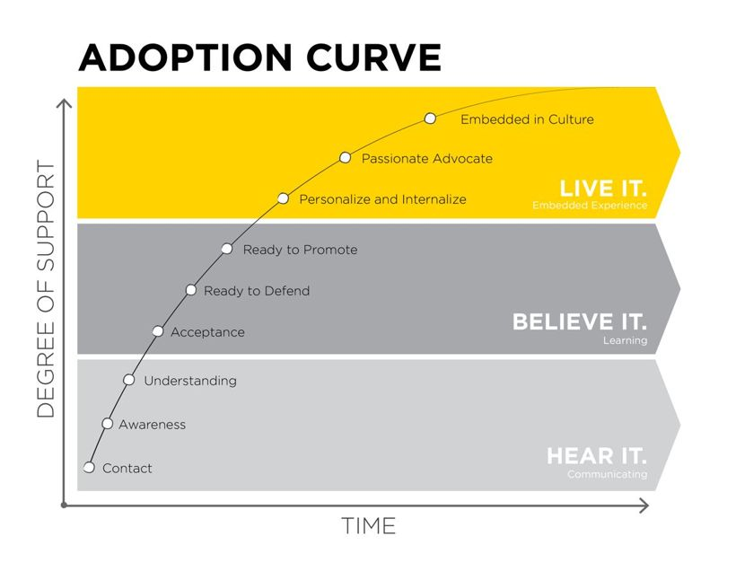
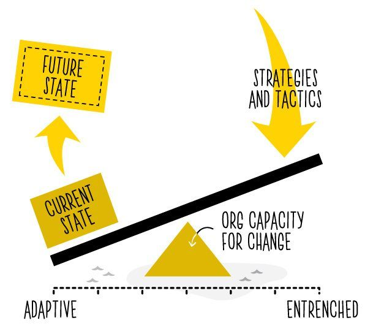
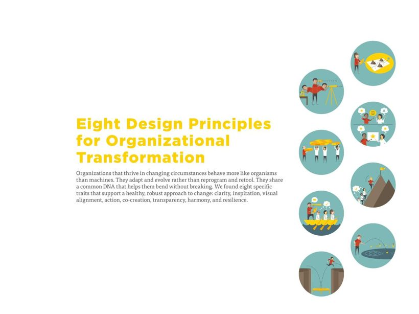
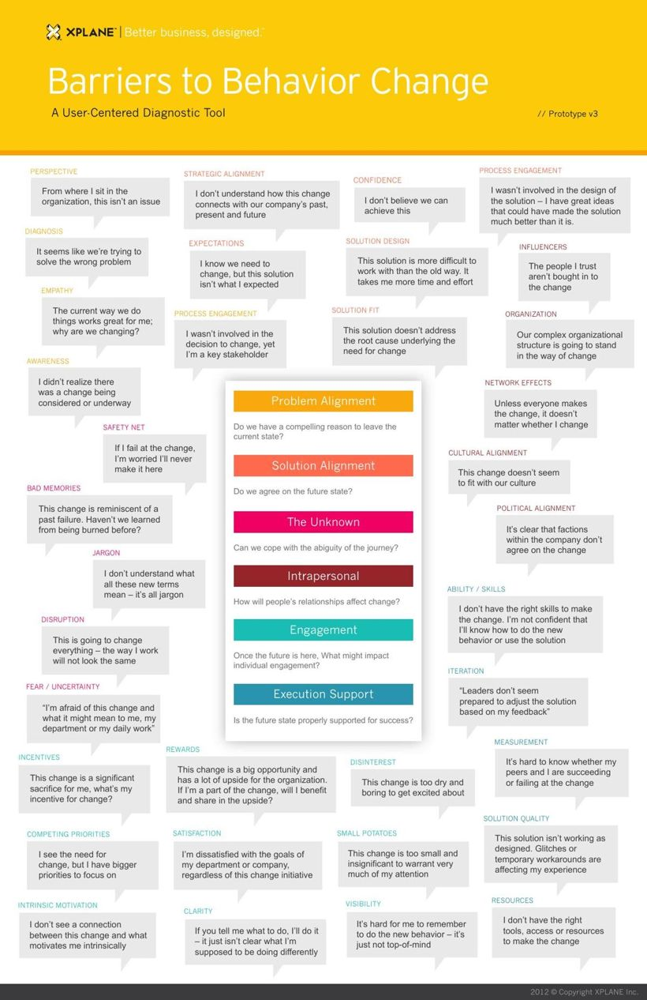
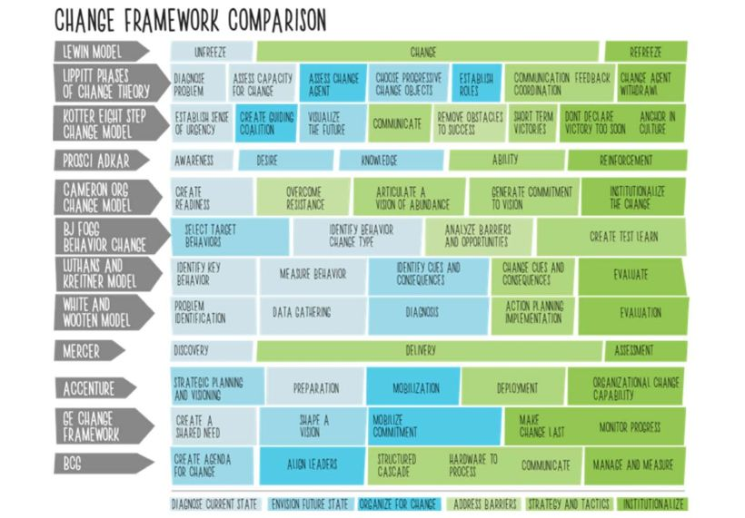
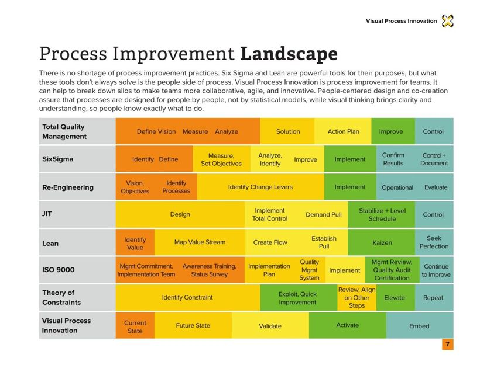
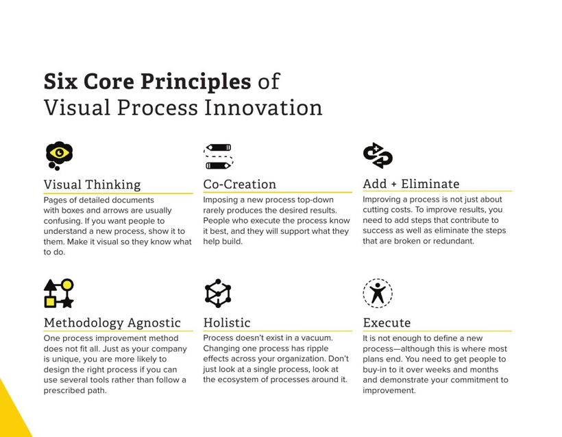